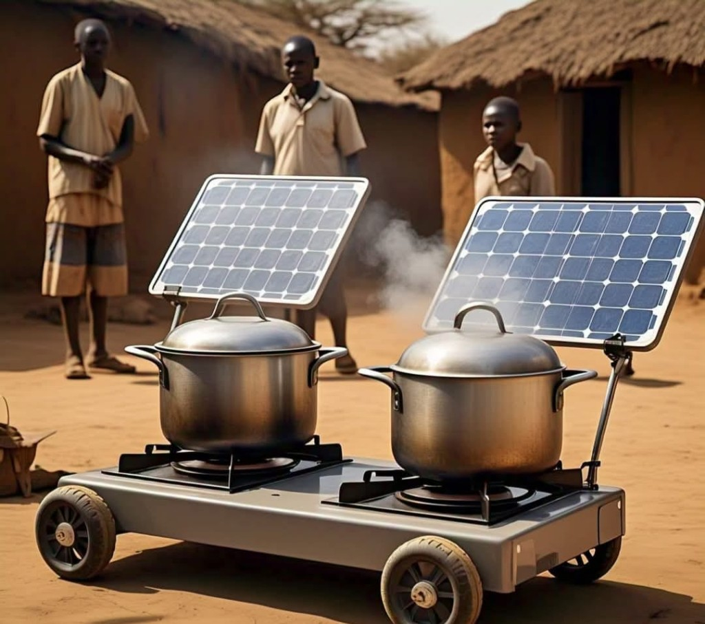

This centre hosts shared platforms that connect SAFI's specialist centres — supporting data and policy, climate finance, learning and international partnerships for sustainability and resilience.
Natural Capital, Climate Finance and Impact

This facility connects ecosystem evidence with planning and responsible investment. Priorities include ecosystem accounting, measurement of soil, biomass and wetland carbon, climate-finance programme design and assessment of who benefits and who bears risk. Community rights, transparent methods and disclosed financial interests are central to the approach. The centre also promotes renewable rural energy technologies for households, clinics, community centres, schools and other public infrastructure to reduce the impact of climate change.
Savannah Futures Academy and Fellowships
The Academy strengthens researchers, practitioners, policymakers and community knowledge experts through short courses, methods workshops, executive learning and fellowships. It is central to the Institute's aim of strengthening people and institutions. Learn more about the Academy →
How Shared Work is Delivered
- Observatories track change over time.
- Living labs allow researchers and users to develop and test ideas together.
- Policy labs bring evidence and decision-makers together to explore workable options.
- Knowledge commons organise information with appropriate access and ownership arrangements.
These approaches are established in stages through resourced programmes. We welcome partners who can contribute complementary skills, methods, data stewardship or training to a defined programme of work.